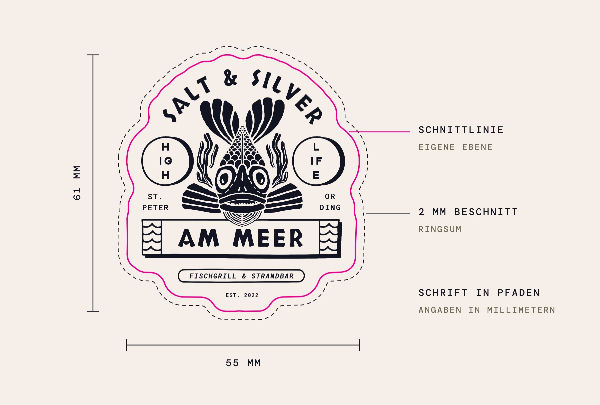

40 Sticker, vier Serien.
Ein Stickerset als Idee für euch, aus euren Zeichnungen und euren eigenen Sätzen von der Website.
ASerie 1 von 4
Die Marke.
Wortmarke und Emblem, dazu die Sätze, die auf eurer Seite groß stehen: Taste around the world. Travel, surf, cook. Life is short, make it nice!


BSerie 2 von 4
Die Häuser.
Jedes Haus hat seine eigenen. Hamburg mit Kurs und Hausnummer, das Crudo mit Fisch und Tacos, am Meer der Pfahlbau. Auf B06 sitzt ein Code, der zur Reservierung führt.


CSerie 3 von 4
Die Zeichen.
Eure Stempel im Konturschnitt, jeder mit der Wortmarke darunter. Für Laptops, Bretter und Kühlboxen.


DSerie 4 von 4
Die Sätze.
Zehn Zeilen, die ihr selbst geschrieben habt. Sie stehen auf euren Restaurant-Seiten, auf dem Pet Nat und in eurer Geschichte.


+Druck
Wenn ihr sie drucken wollt.
Jeder Sticker liegt einzeln als Vektor bereit, so wie B07 hier unten. Die Druckerei braucht nur den Ordner mit den 40 Dateien.
Dazu gibt es einen Bogen in Originalgröße. Ausdrucken, ausschneiden, an die Kaffeemaschine halten.
